Overview
Safe and Sound was the culmination of an extensive research process that identified why students feel unsafe during their commute to and from campus and what makes them feel safer. It's an application that makes use of crowd sourcing to make students feel safe.
My Role
UX Research & Design
My Team
- Maddy Cha
- Joshua Kerry
- Candia Gu
Time
7 weeks
Tools
Miro, Framer, Sketch
The Final Product
The Process
Stakeholder Map
We created a stakeholder map to gain a deeper understanding of the context we were working within. In doing so, we were able to identify how different people in students' lives were concerned about their safety for varying reasons. For example, to students' parents, their childrens' safety is usually the top priority whereas to the school administration, student safety is important within the larger focus of upholding the school's reputation. By understanding how these different actors and reasons played into each other, we were able to move forward in our process with a strong fundamental understanding of the context we were working within and the audiences we had to target.
Contextual Inquiries
We conducted 4 contextual inquiries with undergraduate students. When conducting my contextual inquiry, I started by asking questions about the commute itself such as "where do you commute from?" and "is this the route you normally take?". As the inquiry progressed, I was able to delve deeper and gain insight into specific instances that the student felt unsafe.
After debriefing with my team, we saw that the most common responses were that other people made students feel safer, essentially the more the merrier. Full documentation of our contextual inquiry process and evidence can be found here.
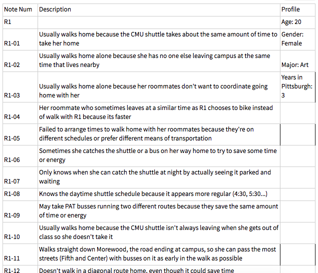
Affinity Diagramming
In an effort to better consolidate information from our contextual inquiries, my team conducted an affinity diagramming session. During this session, we first grouped together different notations from our contextual inquries that had similar tones, themes, and reasonings behind them. From there we worked our way up until we arrived at 3 high level groupings.
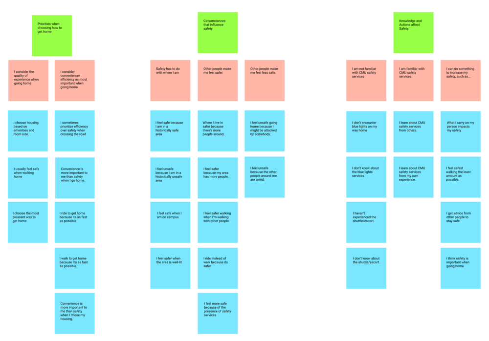
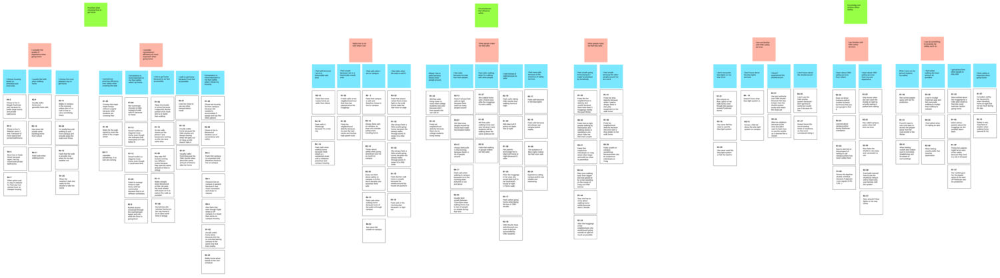
Survey
We designed the survey to collect numerical data that would be of assistance in designing for our target audience and then distributed the survey to our target audience, students, via facebook groups and email lists.
We receieved approximately 50 responses. Of those responses around 65% stated that they live relatively close to campus. Over 50% of students stated that that they walk home from campus after 10pm. A similar number also stated that they felt moderately safe on campus provding a score of 3 out of 5. Most students seemed to know of at least one safety service provided by the school, but very few knew of all the safety services provided by the school.
Walk the Wall
At this point, we knew we wanted to narrow down our problem space. Using Walk the Wall, we were able to consolidate all of our data, qualitative and quantitative and identify specific areas of focus. We saw that while safety was a high priority for most students when compared with other aspects of transportation, such as time or money, it was something students thought about retroactively. This essentially means students start worrying about their safety after they've left campus and are on the way home, it's not something that they proactively take measures against.
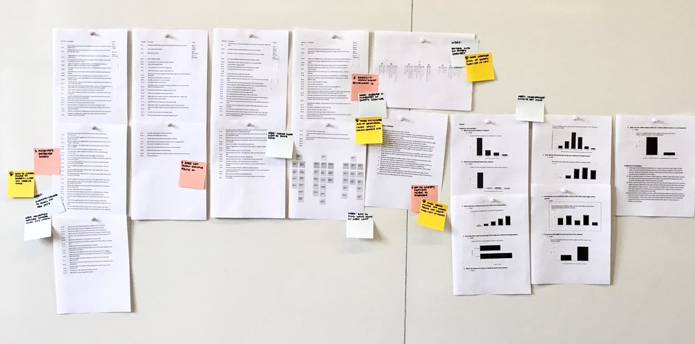
Storyboards
Our team created storyboards to focus on testing different needs identified through Walk the Wall. One of the primary needs we wanted to test was whether the degree to which other people helped students feel safer. Did they feel safer simply knowing other people are walking around them or do they need someone walking beside them to really feel secure? Below are a few of the storyboards we tested.
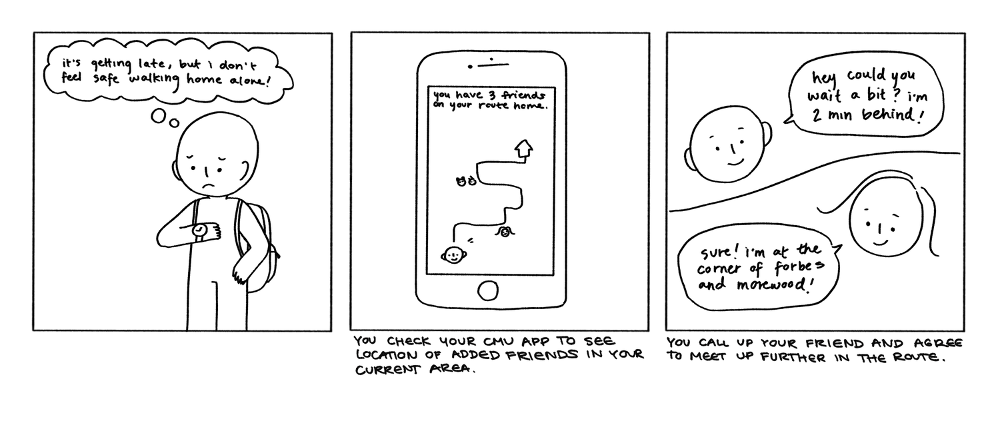
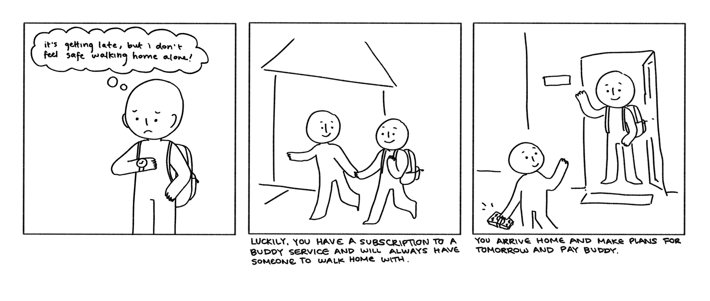
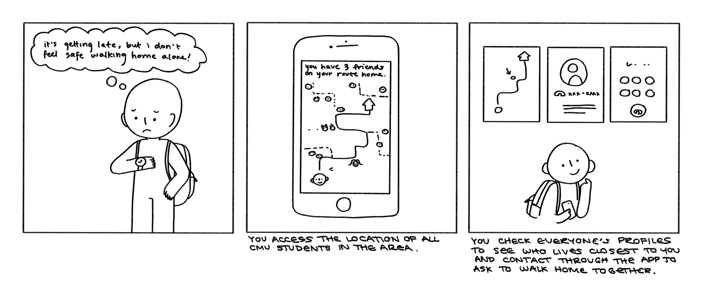
Speed Dating
We then used these storyboards to conduct speed dating sessions. After doing so we were able to validate the needs we had identified. We saw that students feel safer simply knowing that there are other students on their route home, students feel secure when they know they have an easy and quick defense option in the case of a dangerous situtaion, and students prefer convenient safety services that require less effort input.
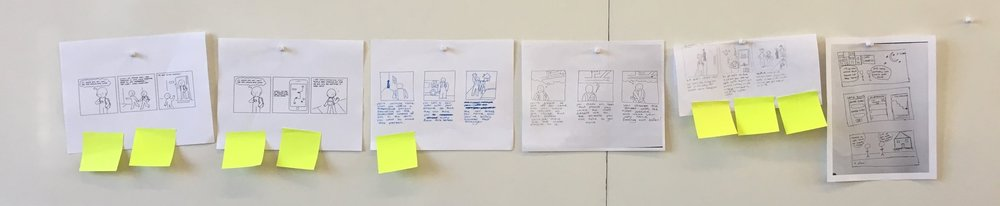
Paper Prototype
After having validated the needs we identified, we brainstormed a list of features we wanted to include in our solution. After discussing the best way to implement all these features we decided a phone application would be the most efficient way to proceed.
We knew from our research that we wanted to prioritize helping students feel secure and enabling them to have people on the line or to text so that they could act as “witnesses”. We drew up what we thought the necessary features might manifest themselves as and arrived at the following designs. These screens allow users to see that there are other people around them while also allowing them to alert specific contacts if something were to go wrong.
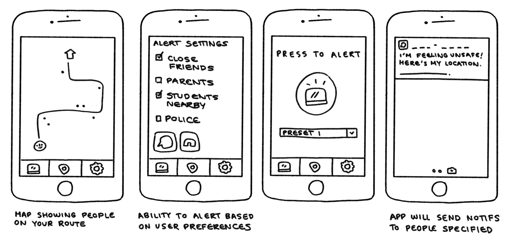
Mid-fi Iterations
After a short round of usability tesing, we received feedback mainly focused on the fidelity of our prototype. As such, our main focus became to clean up the prototype so that it was more understandable. This primarily included refining the iconography and visuals. We also worked on increasing customization options in terms of our alert preferences and how exactly the alarm would look and function for individual users depending on what settings they chose. We felt that a dark background was best suited for the application so that it would drain less battery, decrease eye strain at night, and help it stand out less when dark outside.
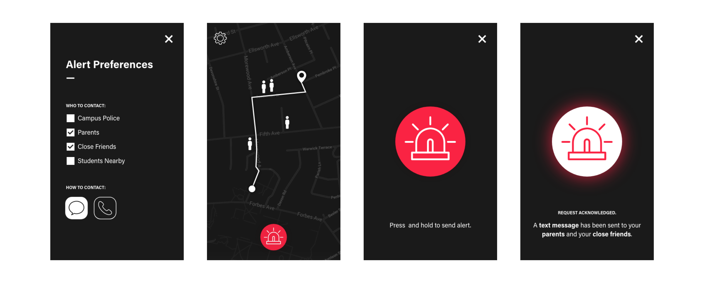
Experience Prototyping
With our mid-fi prototype, we tested walking home with users to see how they would utilize the application within a real-life context. Users found that the emergency alert button on the map screen was in a very prominent location and that it was easily accessible. Most users however also pointed out that it might be a little too accessible and one user commented that the button might be placed too similarly to how a home button might be placed. In terms of alert preferences, users wanted more granular options for calling and texting different contacts (i.e being able to choose to send a text to their parents but call the campus police).
Final Designs
Below our the final designs and our poster presentation.
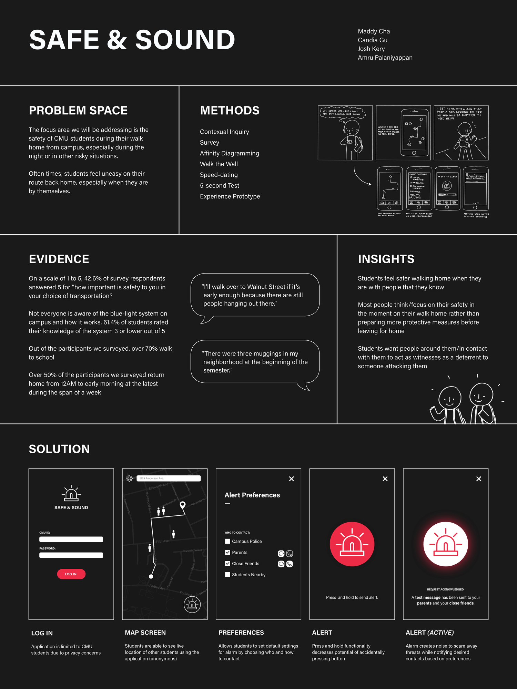
Reflection
At the conclusion of this project, I had gained an immense amount of practice preparing and utilizing different research methodologies. Through this project, I was able to understand every "why", "how", "when", "where", and "what" behind safety at CMU and accordingly use my findings to help develop a solution. Each methodology my team and I utilized further clarified the direction we needed to move forward in and helped us to refine and implement a successfully receieved mobile application.